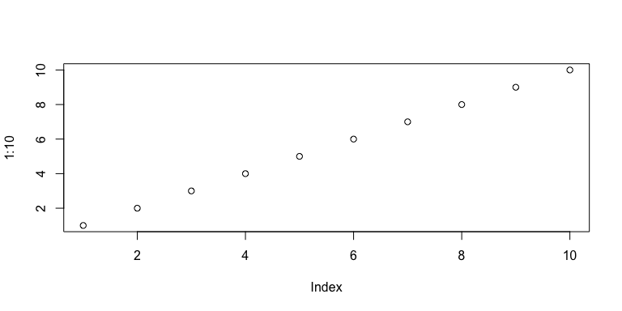

How to style an Rmarkdown document (Header 1)
Header 2
Header 3
Text
italic
bold
Lists
- item 1
-
item 2
- subitem a
- subitem b
-
first item
- another item
- subitem a
- subitem b
- new item
Separating lines
These two markdown lines will be on the same line.
Separate new lines by pressing enter twice.
Images

R Code Blocks
Show both code and outcome:
1 + 1
## [1] 2
Show only outcome:
## [1] 2
Don't run code:
1 + 1
You can make a figure wider:
plot(1:10)

Other styles you may not need
$$ \sqrt{x} + \frac{y}{x} $$
Dealing with Errors
```r
library(knitr)
opts_knit$set(error=TRUE)
```
References and Cheatsheets
PDFs